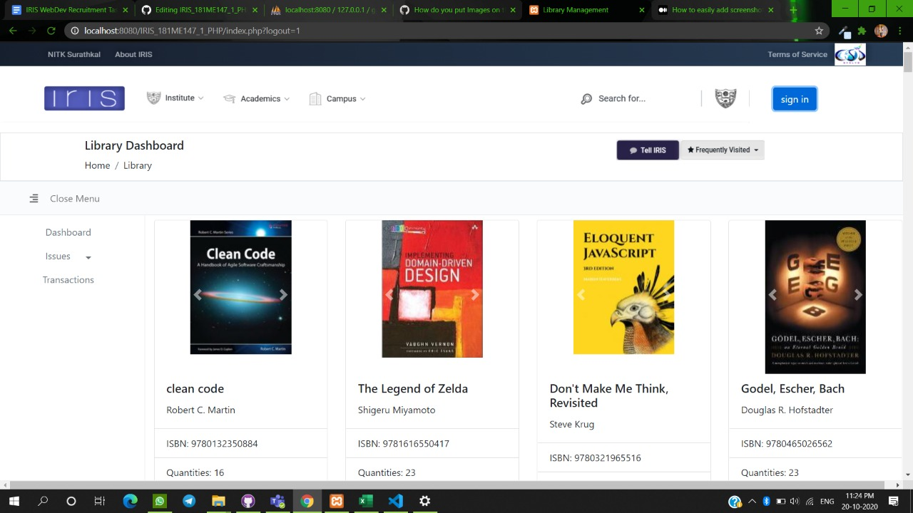

I am passionate about my work. Because I love what I do, I have a steady source of motivation that drives me to do my best.
I am ambitious and driven. I thrive on challenge and constantly set goals for myself, so I have something to strive towards. I’m not comfortable with settling, and I’m always looking for an opportunity to do better and achieve greatness.
I’m a natural leader. I’ve eventually been promoted to a leadership role in almost every job because I like to help people.


Library management system-
It unables you to request a book and return it and in admin side it shows all books accept reject options.
Your quotes-
Its besacially helps you to share youe thounghts with feature of taking background images.